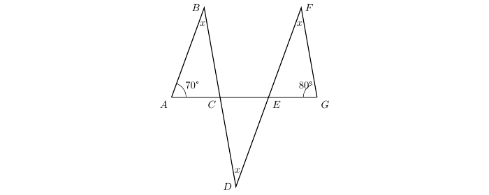

AP Concours · chapitre 2-n1 · 20 questions tirées au hasard parmi 37
Score : 0 / 20
1L'aire d'un rectangle est égale à $126$ cm2. Si la longueur de ce rectangle mesure $18$ cm, que mesure son périmètre ?
Réponse :B) $50$ cm. $\ell=\dfrac{126}{18}=7$, donc $\mathcal{P}=2(18+7)=50$ cm.
2Gaspard le cafard se déplace uniquement sur les lignes d'un quadrillage dont les carrés ont un côté de longueur $1$. Si Gaspard se trouve sur un croisement du quadrillage, combien de croisements sont pour lui à distance $3$ (le long des lignes) ?
Réponse :D) $12$. Sur le quadrillage, les croisements à distance $3$ (le long des lignes) sont $(\pm3,0)$, $(0,\pm3)$, $(\pm2,\pm1)$ et $(\pm1,\pm2)$, soit $12$.
3Un parallélogramme possède toujours :
Réponse :A) uniquement un centre de symétrie. Un parallélogramme quelconque a un centre de symétrie (intersection des diagonales) ; il n'a des axes que dans les cas particuliers (rectangle, losange, carré).
4Un disque est inscrit dans un carré. Sachant que l'aire du disque mesure $9\pi$ cm2, que mesure, en centimètres carrés, l'aire du carré ?
Réponse :A) $36$. $\pi r^{2}=9\pi$ donne $r=3$, donc le côté du carré vaut $2r=6$ et son aire $36$ cm$^{2}$.
5Les angles consécutifs d'un quadrilatère (non croisé) ont comme amplitudes, en degrés, $x$, $2x$, $3x$ et $4x$, dans cet ordre.
Réponse :D) trapèze. $x+2x+3x+4x=360$ donne $x=36$, d'où les angles $36$°, $72$°, $108$°, $144$° : comme $36+144=180$, deux côtés sont parallèles.
6Dans le triangle $ABC$, on construit les points $D$ et $E$ respectivement milieux de $[AB]$ et de $[AC]$. Si la surface du triangle $DEB$ est de $16$ cm2, quelle est la surface du triangle $ABC$ ?
Réponse :A) $64$ cm$^{2}$. $D$ et $E$ sont les milieux de $[AB]$ et $[AC]$ : le triangle $DEB$ a une aire égale au quart de celle de $ABC$, donc $4\times16=64$.
7Le point $C$ se trouve sur la droite $AB$, entre $A$ et $B$, tandis que $D$ est hors de cette droite. Le triangle $ACD$ est isocèle en $C$ avec $\widehat{A}=32$° ; le triangle $CBD$ est isocèle en $B$. Que mesure $\widehat{B}$ ?
Réponse :A) $52$°. Dans $ACD$ isocèle en $C$ : $\widehat{ACD}=180-2\times32=116$, donc $\widehat{BCD}=64$ ; dans $CBD$ isocèle en $B$ : $\widehat{B}=180-2\times64=52$.
8Des carrés noir et gris sont positionnés à l'intérieur d'un grand carré comme indiqué sur la figure. Quel est le rapport de l'aire du carré noir à celle du carré gris ?
Réponse :D) $\dfrac98$. Le carré noir occupe le quart ($\frac{a^{2}}{4}$) et le losange gris a pour diagonales $\frac{2a}{3}$, donc pour aire $\frac{2a^{2}}{9}$ : $\dfrac{a^{2}/4}{2a^{2}/9}=\dfrac98$.
9Une droite partage toujours le plan en deux parties. Deux ou trois droites distinctes partagent le plan en un nombre de parties qui dépend des positions des droites. Cependant, parmi les suivants, il y a un nombre de parties qui ne sera jamais obtenu avec deux ou trois droites ; lequel ?
Réponse :C) $5$. Avec deux droites on obtient $3$ ou $4$ parties ; avec trois droites $4$, $6$ ou $7$. Le nombre $5$ est impossible.
10Le périmètre d'un rectangle est égal à $50$ cm. Si l'un de ses côtés mesure $7$ cm, que mesure, en centimètres carrés, l'aire de ce rectangle ?
Réponse :B) $126$ cm$^{2}$. $2(L+7)=50$ donc $L=18$ et $18\times7=126$.
11Voici un grand carré divisé en petits carrés. Ceux du bord sont grisés. Pour un grand carré qui compte $n$ petits carrés par côté, parmi les expressions suivantes, laquelle exprime le nombre de carrés gris ?
Réponse :E) $4(n-1)$. Le bord compte $n^{2}-(n-2)^{2}=4n-4$ cases.
12Deux carrés sont l'un circonscrit et l'autre inscrit à un cercle. Que vaut le rapport de l'aire du grand carré à celle du petit ?
Réponse :B) $2$. Grand carré : côté $2r$, aire $4r^{2}$ ; petit carré : diagonale $2r$, côté $r\sqrt2$, aire $2r^{2}$ ; rapport $2$.
13Dans le triangle $ABC$, $D$ est le milieu de $[AB]$, $E$ celui de $[CD]$ et $F$ celui de $[AE]$. L'aire du triangle $ABC$ vaut $20$. Dans ces conditions :
Réponse :E) l'aire de chacun de ces quatre triangles vaut $5$. Chaque médiane partage l'aire en deux : $ABD$ et $ACD$ valent $10$, puis $ACE=5$, $BCE=5$ (par différence), $ABF=5$ et $BFE=5$.
14Trois rectangles de largeur $1$ et de longueur $3$ forment une figure en forme d'escalier. Quel est le périmètre extérieur de cette figure ?
Réponse :B) $14$. En suivant le contour extérieur des trois rectangles $1\times3$ disposés en escalier, on totalise $14$ unités.
15Le côté du petit carré vaut le tiers du côté du carré moyen ; le côté du carré moyen vaut la moitié du côté du grand carré. Si l'aire du petit carré est $11$ cm2, quelle est l'aire du grand carré, en centimètres carrés ?
Réponse :C) $396$ cm$^{2}$. Le côté du grand carré vaut $6$ fois celui du petit, donc l'aire vaut $6^{2}=36$ fois $11$, soit $396$.
16D'après la figure (imprécise) ci-dessous, que vaut l'amplitude de l'angle $\widehat{AEF}$ ?
Réponse :D) $53{,}7$°. $\widehat{DFB}=90-23{,}9=66{,}1$ puis $\widehat{AFE}=180-66{,}1-77{,}6=36{,}3$, enfin $\widehat{AEF}=90-36{,}3=53{,}7$.
17Dans le rectangle suivant, $M$ et $N$ sont les milieux de deux côtés. Si l'aire du triangle $MNP$ est $12$, quelle est l'aire du rectangle ?
Réponse :A) $32$. Avec $N$ et $M$ milieux et $P$ au sommet, $\mathcal{A}(MNP)=\frac38\mathcal{A}(\text{rectangle})=12$, donc le rectangle vaut $32$.
18Quelle est la valeur de $x$ sur cette figure (imprécise) ?

Réponse :A) $30$°. Dans le triangle $EFG$ : $70+x+80=180$, donc $x=30$.
19Le carré $ABCD$ a pour centre $O$ et le milieu de son côté $[AD]$ est $M$. Le rapport de l'aire du quadrilatère ombré à celle du carré vaut :
Réponse :B) $\dfrac14$. Avec un carré de côté $2$, le quadrilatère $MBOC$ a pour aire $1$ pour une aire totale de $4$.
20Un rectangle de périmètre $42$ est partagé en $4$ rectangles par deux segments parallèles aux côtés. Si le périmètre du rectangle numéro 1 est $12$, quel est le périmètre du rectangle numéro 4 ?
Réponse :C) $30$. Les périmètres des quatre rectangles vérifient $\mathcal{P}_{1}+\mathcal{P}_{4}=\mathcal{P}_{2}+\mathcal{P}_{3}=\mathcal{P}$ total, donc $\mathcal{P}_{4}=42-12=30$.
21D'un coup de ciseaux, j'enlève un triangle dans chaque coin d'un rectangle, en coupant chaque fois au quart de la longueur et au quart de la largeur du rectangle. Quelle fraction de l'aire du rectangle a ainsi été enlevée ?
Réponse :C) $\dfrac18$. Chaque triangle enlevé a pour aire $\frac12\cdot\frac L4\cdot\frac{\ell}{4}=\frac{L\ell}{32}$ ; les quatre donnent $\frac{L\ell}{8}$.
22Quelle transformation du plan amène la lettre $P$ inférieure gauche sur la lettre $P$ supérieure droite ?
Réponse :A) une symétrie orthogonale. La lettre $d$ est l'image de $P$ par une réflexion : aucune rotation ne transforme un $P$ en un $d$.
23Dans cette suite, quel numéro porte la figure constituée de $259$ cases ?
Réponse :B) $128$. La figure $n$ comporte $3+2n$ cases ; $3+2n=259$ donne $n=128$.
24Les dimensions du rectangle $ABCD$ sont $3$ et $4$. Le point $E$ est le milieu du côté $[AB]$. Quelle est l'aire du triangle $BED$ ?
Réponse :A) $3$. $BE=2$ et la hauteur issue de $D$ vaut $3$, donc $\mathcal{A}=\frac12\times2\times3=3$.
25Une grille rectangulaire est divisée en $15$ cases de même grandeur, dont certaines sont noires. Combien de carrés de $4$ cases ($2\times2$) contiennent une case noire ?
Réponse :C) $6$. Il y a $8$ carrés de $2\times2$ ; ceux qui ne contiennent aucune case noire sont ceux de la colonne de droite, il en reste $6$.
26Le pignon d'une maison a la forme d'un hexagone avec deux angles droits. Les quatre autres angles intérieurs ont la même amplitude. Quelle est, en degrés, l'amplitude de chacun de ces quatre angles ?
Réponse :C) $135$°. Somme des angles d'un hexagone : $720$° ; en retirant les deux angles droits il reste $540$° à partager en quatre, soit $135$°.
27Quel est le nombre maximal d'angles droits consécutifs d'un octogone convexe sans angle plat ?
Réponse :A) $3$. Si $k$ angles consécutifs sont droits, les $8-k$ autres totalisent $1080-90k<180(8-k)$, donc $k<4$ : le maximum est $3$.
28Ce grand cube était formé de $64$ petits cubes identiques. Trois tunnels rectilignes ont été creusés, qui le traversent de part en part. Les zones ombrées sur la figure représentent leurs extrémités. Combien reste-t-il de petits cubes ?
Réponse :D) $54$. $64-(4+4+4)+2=54$ : les trois tunnels retirent $12$ cubes et le cube central, compté trois fois, doit être rajouté deux fois.
29Pour décomposer un triangle acutangle quelconque en deux figures de même aire, il suffit de tracer :
Réponse :A) une médiane. Une médiane partage un triangle en deux triangles de même aire (même base, même hauteur).
30Pour la remise des prix de l'OMB, un super-podium à dix places a été construit avec des cubes, empilés les uns sur les autres sans laisser de trou. Il est représenté ci-contre. De combien de cubes est-il formé ?
Réponse :C) $20$. Le podium a dix places ; les colonnes ont pour hauteurs $4,3,2,1$ puis $3,2,1$ puis $2,1$ puis $1$, dont la somme vaut $20$.
31Soit un trapèze quelconque $PQRS$ de bases $[PQ]$ et $[RS]$. Si $\widehat{SRP}=41$° et $\widehat{PQR}=112$°, quelle est, en degrés, l'amplitude de $\widehat{PRQ}$ ?
Réponse :A) $27$°. $\widehat{QRS}=180-112=68$ et $\widehat{PRS}=41$, donc $\widehat{PRQ}=68-41=27$.
32Quelle est l'aire du polygone constitué de deux rectangles juxtaposés, exprimée en fonction de $x$ ?
Réponse :D) $3x^{2}+4x$. La longueur du second rectangle vaut $(2x+3)-(x+2)=x+1$ ; l'aire totale est $x(2x+3)+x(x+1)=3x^{2}+4x$.
33Parmi les quatre dessins suivants, combien peuvent être tracés sans lever le crayon et sans repasser par un même trait ?
Réponse :B) $1$. Avec le carré fermé, seul le premier dessin a deux sommets de degré impair ; les trois autres en ont quatre et ne peuvent pas être tracés d'un seul trait.
34Dans le rectangle $ABCD$, les points $P$, $Q$, $R$ et $S$ sont situés sur les côtés à une distance égale au quart de la longueur de leur côté à partir des sommets $A$ et $C$. Quel est le rapport de l'aire de $PQRS$ à celle de $ABCD$ ?
Réponse :E) une autre réponse. Avec $AP=AQ=CR=CS=\frac14$ du côté, les quatre triangles retirés aux coins ont pour aire totale $\frac{5}{8}$ du rectangle, donc $\mathcal{A}(PQRS)=\frac{3}{8}\mathcal{A}(ABCD)$.
35Dans le triangle ci-dessous, les amplitudes de deux angles sont indiquées en degrés. Combien y a-t-il de valeurs de $x$ pour lesquelles le triangle est rectangle ?
Réponse :C) $2$. L'angle droit peut être à l'un des deux sommets marqués ou au troisième : $x=20$ (triangle $10$°, $80$°) et $x=60$ (triangle $90$°, $40$°) conviennent, $x=10$ donnerait un angle négatif.
36En pliant un triangle selon une droite, je peux obtenir un polygone à $6$ côtés, comme sur la figure ci-dessous. Combien de côtés puis-je obtenir au maximum en pliant un rectangle selon une droite ?
Réponse :C) $7$. Le pli conserve quatre morceaux de côtés du rectangle, ajoute le segment de pli et deux côtés du rabat, soit au maximum $7$ côtés.
37Dans le plan muni d'un repère orthonormé, un triangle $ABC$ a pour sommets $A(2 ;1)$, $B(6 ;2)$ et $C(3 ;7)$. Laquelle des opérations suivantes donne un triangle qui ne peut pas être obtenu en appliquant une symétrie orthogonale à $ABC$ ?
Réponse :C). Changer le signe des abscisses (A), des ordonnées (B) ou échanger les coordonnées (D) sont des symétries orthogonales ; changer le signe des deux coordonnées est une symétrie centrale, qui n'en est pas une.